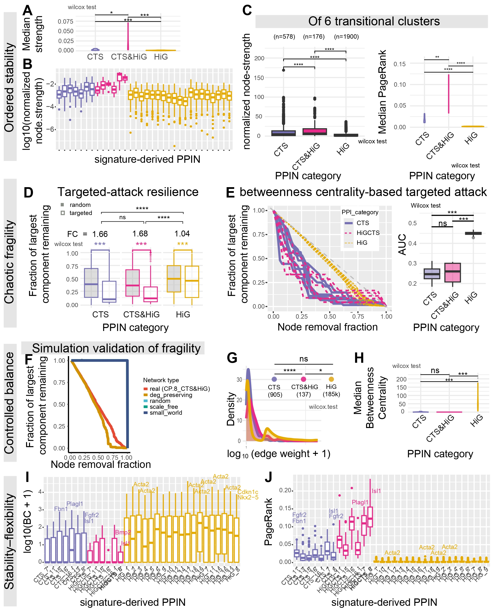
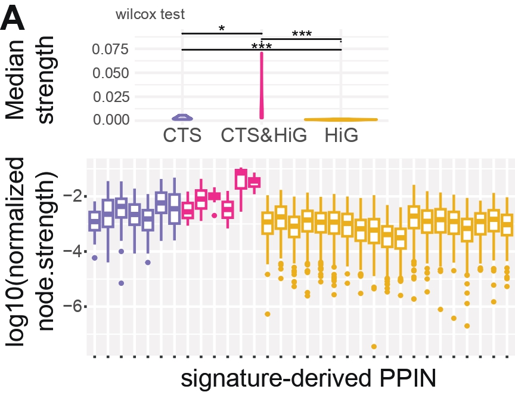
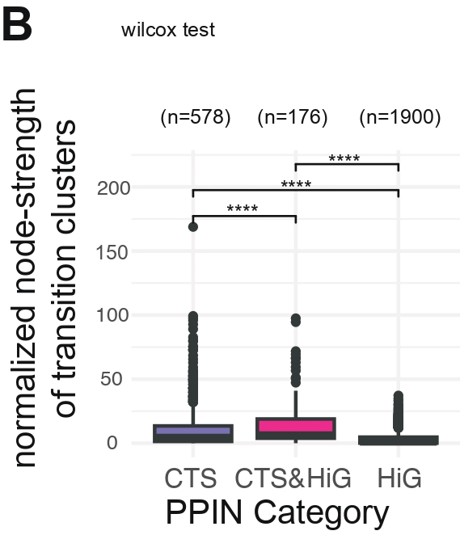
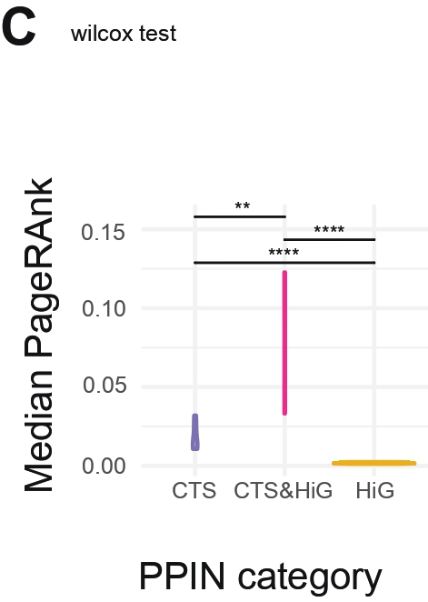
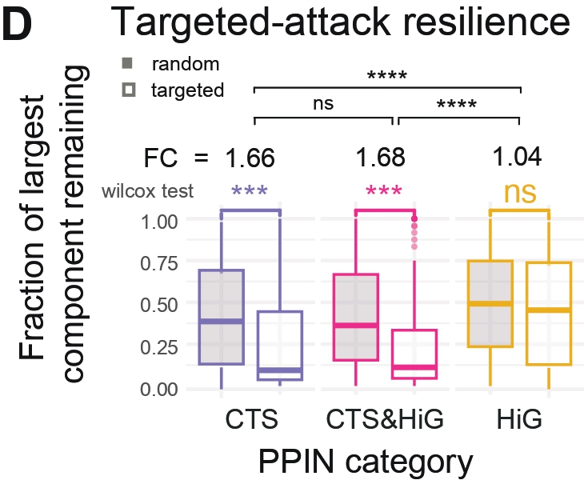
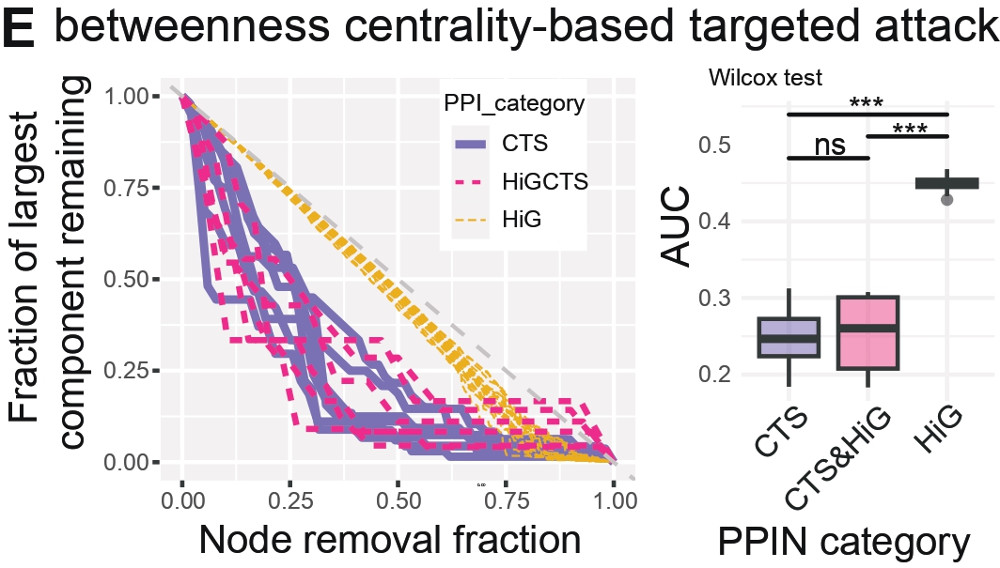
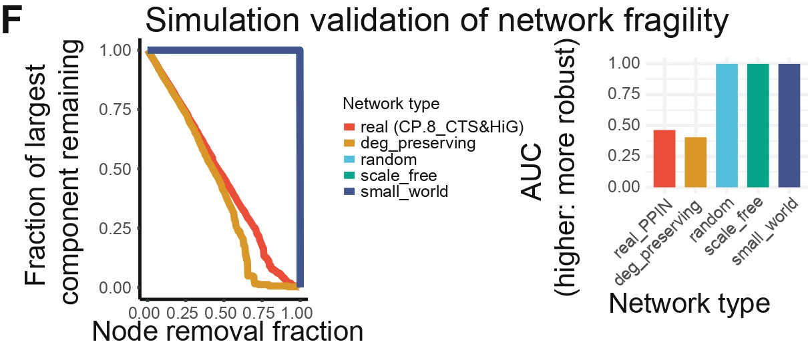
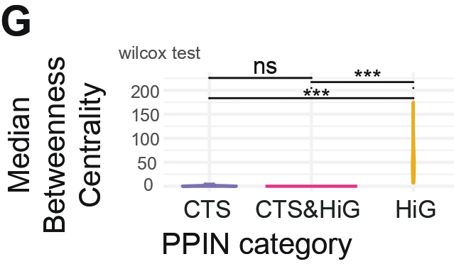
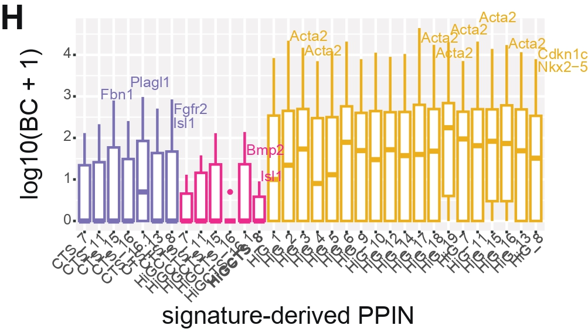
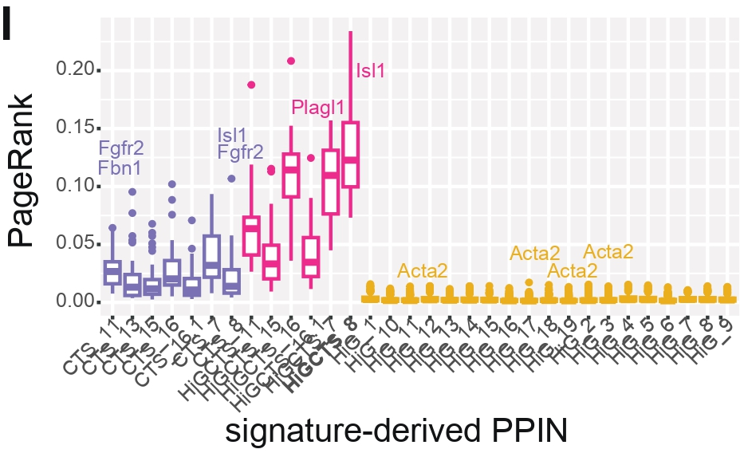

Holly's Overview

library(gplots)
require(dplyr)
library(data.table)
library(ggplot2)
library(ggpubr)
library(ggrepel)
library(igraph)
library(rstatix)
library(scales)
library(pracma)
library(MLmetrics)
library(sm)
########## BEGINNING OF USER INPUT ##########
wd = "/Users/felixyu/Documents/GSE87038_weighted/" # working directory
celltype_specific_weight_version <- '10'
source(paste0('https://raw.githubusercontent.com/xyang2uchicago/TIPS/refs/heads/main/R/celltype_specific_weight_v', celltype_specific_weight_version, '.R')) # source from GitHub or use local file
db <- "GSE87038" # dataset name for file naming
PPI_color_palette = c("CTS" = "#7570B3", "HiGCTS" = "#E7298A", "HiG" = "#E6AB02") # Coloring for HiG, HiGCTS, and HiG clusters
PPI_size_palette = c("CTS" = 1, "HiGCTS" = 0.75, "HiG" = 0.25) # Line width for HiG, HiGCTS, and HiG clusters
CT_id = c("7", "8", "11", "13", "15", "16", "16.1") # critical transition cluster ids
CT_id_formatted <- paste0("_(", paste(CT_id, collapse = "|"), ")")
setwd(paste0(wd, 'results/PPI_weight/'))
inputdir = "../../data/" # directory for input data files (e.g. CHD_Cilia_Genelist.rds)
# For Figure E
# Choose what to plot: "vertex", "edge", or "both"
plot_mode <- "vertex" # change this to "edge" or "both" as needed
# For Figure K
CP_CTS <- "HiGCTS_8" # cardiac progenitor critical transition cluster
s = "combined" # specificity method
########## END OF USER INPUT ##########
file = paste0(db, '_STRING_graph_perState_simplified_',s,'weighted.rds')
graph_list <- readRDS(file)
(names(graph_list))
# [1] "HiG_1" "HiG_2" "HiG_3" "HiG_4" "HiG_5" "HiG_6" "HiG_9" "HiG_10" "HiG_12" "HiG_14" "HiG_17" "HiG_18" "HiG_19" "HiG_7"
# [15] "HiG_11" "HiG_15" "HiG_16" "HiG_13" "HiG_8" "HiGCTS_7" "HiGCTS_11" "HiGCTS_15" "HiGCTS_16" "HiGCTS_16.1" "HiGCTS_8" "CTS_7" "CTS_11" "CTS_15"
# [29] "CTS_16" "CTS_16.1" "CTS_13" "CTS_8" "HiGCTS_13"
signature_levels = c(names(graph_list))To evaluate the weighted connectivity structure of each PPIN derived from GSE87038 signatures. Normalized node strength reflects the sum of all weighted interactions per gene, adjusted for network size. These panels describe both the typical strength (medians) and the full distribution across categories (CTS, HiGCTS, HiG).
HiG networks generally show lower normalized strength, indicating weaker weighted connectivity. CTS and HiGCTS PPINs tend to contain more strongly connected genes, suggesting
TBD
df_PAGERANK_strength_ANND.rewring.P.rdsCHD_Cilia_Genelist.rdsgraph_list from GSE87038_STRING_graph_perState_simplified_combinedweighted.rds
Note: figures shown are polished versions of the raw outputs
###################################################
# Fig A ) normalized node strength analysis
# original code: 11.3_CTS_cardiac_network_ANND_pagerank.R
# original pdf: normalized.node.strength_GSE87038_v2.pdf
################################################################
{
df = readRDS(file='df_PAGERANK_strength_ANND.rewring.P.rds') #!!!!!!!!!!!!!!!!!!!!!!!
df = rbind(subset(df, PPI_cat=='CTS'),
subset(df, PPI_cat=='HiGCTS'),
subset(df, PPI_cat=='HiG')
)
df$label=df$gene
CHD = readRDS( file=paste0(inputdir, 'CHD_Cilia_Genelist.rds'))
df_median = df %>% group_by(signature) %>%
summarise(median_normalized_strength = median(normalized.strength, na.rm = TRUE))
df_median$PPI_cat = lapply(df_median$signature, function(x) unlist(strsplit(x, split='_'))[1]) %>% unlist
df_median$PPI_cat = factor(df_median$PPI_cat,levels=c('CTS', 'HiGCTS', 'HiG'))
violin_median_normalized.strength_wilcox = ggplot(df_median, aes(x = PPI_cat, y = median_normalized_strength, color = PPI_cat, fill = PPI_cat)) +
geom_violin(alpha = 0.3) + # Violin plot with transparency
scale_color_manual(values = PPI_color_palette) +
scale_fill_manual(values = PPI_color_palette) +
theme_minimal() +
theme(legend.position = "none") + #, axis.text.y = element_blank(), axis.title.y = element_blank()) +
labs(x = "PPI category", y = "median of normalized node strength per PPI") + # Label the axes
# Add statistical comparisons using stat_compare_means
stat_compare_means(
aes(group = PPI_cat), # Grouping by the 'PPI_cat' column
comparisons = list(c("HiG", "CTS"), c("HiG", "HiGCTS"), c("HiGCTS", "CTS")), # Specify comparisons
method = "wilcox.test", # Non-parametric test (Wilcoxon)
label = "p.signif", # Show significance labels (e.g., **, *, ns)
label.x = 1.5, # Adjust x-position of the p-value text
size = 4 # Adjust size of the p-value text
,tip.length =0
) +
ggtitle('wilcox, median nor_strength')
vertex(violin_median_normalized.strength_wilcox)
}
###################################################
# Fig B) boxplot of normalized strength for all clusters per category
# original code: 11.3_CTS_cardiac_network_ANND_pagerank.R
# original pdf: normalized.node.strength_GSE87038_v2.pdf
################################################################
{
CHD = readRDS(file = paste0(inputdir, "CHD_Cilia_Genelist.rds"))
df = readRDS(file = "df_PAGERANK_strength_ANND.rewring.P.rds")
# Keep only desired PPI categories in the correct order
df = rbind(
subset(df, PPI_cat == "CTS"),
subset(df, PPI_cat == "HiGCTS"),
subset(df, PPI_cat == "HiG")
)
# Enforce the factor order
df$PPI_cat = factor(df$PPI_cat, levels = c("CTS", "HiGCTS", "HiG"))
df$signature = factor(df$signature, levels = unique(df$signature))
# Add CHD gene annotations
df$PCGC_AllCurated = toupper(df$gene) %in% toupper(unlist(CHD["Griffin2023_PCGC_AllCurated"]))
# Identify top 5 genes per signature by normalized strength
top_genes = df %>%
group_by(signature) %>%
arrange(desc(normalized.strength)) %>%
slice_head(n = 5) %>%
ungroup()
# Subset top CHD genes
top_genes_CHD = subset(top_genes, PCGC_AllCurated == TRUE)
(dim(top_genes_CHD)) # Optional: check how many CHD genes were top 5
# Optional: write out table of top 5 genes
tb = top_genes[, c("signature", "gene", "PPI_cat", "normalized.strength", "PCGC_AllCurated")]
write.table(tb, file = "table_top5_strength_perPPI.tsv", sep = "\t", row.names = FALSE)
# Plot
boxplot_strength = ggplot(df, aes(x = signature, y = log10(normalized.strength), colour = PPI_cat)) +
geom_boxplot(show.legend = TRUE, position = position_dodge2(preserve = "single")) +
scale_color_manual(values = PPI_color_palette) +
geom_text_repel(
data = top_genes_CHD,
aes(label = gene),
size = 2,
box.padding = 0.5,
point.padding = 0.5,
segment.color = "grey50",
max.overlaps = 20,
show.legend = FALSE
) +
theme(
legend.position = "none",
legend.justification = c(1, 1),
axis.text.x = element_text(angle = 45, vjust = 1, hjust = 1)
) +
scale_x_discrete(limits = unique(df$signature)) +
labs(color = "PPI cat")
vertex(boxplot_strength)
}
To determine whether PPINs derived from transcriptionally unstable transition clusters (clusters 7, 8, 11, 13, 15, 16, 16.1) show systematically altered connectivity.
Weaker normalized strength in HiG transition clusters suggests
TBD
graph_list from GSE87038_STRING_graph_perState_simplified_combinedweighted.rds
Note: figures shown are polished versions of the raw outputs
###################################################
# Fig C) boxplot of normalized strength for only transition clusters per category
# original code: 11.2.1_CTS_cardiac_network_strengthDistribution.R
# original pdf: boxplot_normalized_strength_GSE87038.pdf
################################################################
{
V_deg_dis = lapply(graph_list, function(x) strength_distribution(x, cumulative=TRUE )) %>%
lapply(., function(x) x %>%
as.data.frame(strength_distribution=x) %>%
mutate(k=seq_along(x))) %>%
rbindlist(.,idcol=names(.))
colnames(V_deg_dis)[1:2]=c('signature','strength_distribution')
V_deg_dis$PPI_cat = lapply(V_deg_dis$signature, function(x) unlist(strsplit(x , '_'))[1]) %>% unlist %>%
factor(.,levels=c('CTS', 'HiGCTS', 'HiG'))
(table(V_deg_dis$PPI_cat))
# CTS HiGCTS HiG
# 578 176 1900
V_deg_dis$cluster = lapply(V_deg_dis$signature, function(x) unlist(strsplit(x , '_'))[2]) %>% unlist
all(V_deg_dis$signature %in% names(graph_list)) #T
V_deg_dis$n_nodes <- 0
for(i in seq_along(graph_list)){
j = which(V_deg_dis$signature == names(graph_list)[i])
V_deg_dis$n_nodes[j] <- vcount(graph_list[[i]])
}
V_deg_dis$normalized_strength_distribution = V_deg_dis$strength_distribution / (V_deg_dis$n_nodes-1)
boxplot_transition_strength = ggplot(subset(V_deg_dis, grepl(CT_id_formatted, signature)),
aes(x = factor(PPI_cat), y = normalized_strength_distribution, fill = PPI_cat)) +
geom_boxplot() +
labs(x = "PPIN Category", y = "Normalized Strength Distribution", title = "PPINs for transition clusters") +
theme_minimal() +
scale_fill_manual(values = PPI_color_palette) +
stat_compare_means(method = "wilcox",
comparisons = list(c("CTS", "HiGCTS"), c("CTS", "HiG"), c("HiGCTS", "HiG")),
p.adjust.method = "BH", # Adjust p-values using Benjamini-Hochberg (BH) method
label = "p.signif")
print(boxplot_transition_strength)
}
To quantify how global influence is distributed within each PPIN. PageRank identifies genes positioned on influential, central routes through the network.
Lower medians in HiG suggest a
TBD
. Higher medians indicateTBD
.df_PAGERANK_strength_ANND.rewring.P.rds
Note: figures shown are polished versions of the raw outputs
###################################################
# Fig D) violin plot of median PageRank per category
# original code: 11.3_CTS_cardiac_network_ANND_pagerank.R
# original pdf: PageRank_IbarraSoria20183_v2.pdf
################################################################
{
df = readRDS(file='df_PAGERANK_strength_ANND.rewring.P.rds') #!!!!!!!!!!!!!!!!!!!!!!!
df = rbind(subset(df, PPI_cat=='CTS'),
subset(df, PPI_cat=='HiGCTS'),
subset(df, PPI_cat=='HiG')
)
df$label=df$gene
df_median = df %>% group_by(signature) %>%
summarise(pg.median = median(PageRank, na.rm = TRUE))
df_median$PPI_cat = lapply(df_median$signature, function(x) unlist(strsplit(x, split='_'))[1]) %>% unlist
df_median$PPI_cat = factor(df_median$PPI_cat,levels=c('CTS', 'HiGCTS', 'HiG'))
violin_median_pagerank = ggplot(df_median, aes(x = PPI_cat, y = pg.median, color = PPI_cat, fill = PPI_cat)) +
geom_violin(alpha = 0.3) + # Violin plot with transparency
scale_color_manual(values = PPI_color_palette) +
scale_fill_manual(values = PPI_color_palette) +
theme_minimal() +
theme(legend.position = "none") + #, axis.text.y = element_blank(), axis.title.y = element_blank()) +
labs(x = "PPI category", y = "median of PageRanks per PPI") + # Label the axes
# Add statistical comparisons using stat_compare_means
stat_compare_means(
aes(group = PPI_cat), # Grouping by the 'PPI_cat' column
comparisons = list(c("HiG", "CTS"), c("HiG", "HiGCTS"), c("HiGCTS", "CTS")), # Specify comparisons
method = "wilcox.test", # Non-parametric test (Wilcoxon)
label = "p.signif", # Show significance labels (e.g., **, *, ns)
label.x = 1.5, # Adjust x-position of the p-value text
size = 4 # Adjust size of the p-value text
,tip.length =0
) +
ggtitle('wilcox test, median PA')
vertex(violin_median_pagerank)
}
To test PPIN robustness under random failure vs targeted removal of high-betweenness nodes.
Large gaps between random and targeted removal indicate vulnerability to disruption of bottleneck genes—networks heavily reliant on a few key connectors.
failure.vertex_100_simplified_combinedweighted.rdsfailure.edge_100_simplified_combinedweighted.rdsattack.vertex.btwn.rdsattack.edge.btwn.rdsrobustness.dt
Note: figures shown are polished versions of the raw outputs
###################################################
# Fig E) boxplot of %remained_fraction of targeted attack vs random attack
# original code: 11.2_CTS_cardiac_network_robustness.R
# original pdf: box_wilcox-test_attack_GSE87038.pdf
################################################################
{
attack.edge.btwn = readRDS(file='attack.edge.btwn.rds')
attack.vertex.btwn = readRDS(file='attack.vertex.btwn.rds')
failure.vertex = readRDS(paste0('failure.vertex_100_simplified_', s, 'weighted.rds'))
failure.edge = readRDS(paste0('failure.edge_100_simplified_', s, 'weighted.rds'))
failure.dt <- rbind(failure.edge, failure.vertex)
colnames(failure.dt)[1] ='signature'
colnames(attack.vertex.btwn)[1] = 'signature'
robustness.dt <- rbind(failure.dt, attack.vertex.btwn, attack.edge.btwn)
robustness.dt$PPI_cat = lapply(robustness.dt$signature, function(x) unlist(strsplit(x, '_'))[1]) %>%
unlist() %>%
factor(levels = c('CTS', 'HiGCTS', 'HiG'))
robustness.dt$experiment = ifelse(grepl('edge', robustness.dt$type), 'edge', 'vertex')
robustness.dt$measure = factor(robustness.dt$measure, levels = c("random", "btwn.cent"))
robustness.dt$type = factor(robustness.dt$type,
levels = c("Random edge removal", "Targeted edge attack",
"Random vertex removal", "Targeted vertex attack"))
robustness.dt$cluster = lapply(robustness.dt$signature, function(x) unlist(strsplit(x, '_'))[2]) %>% unlist()
# Filter by plot_mode
if (plot_mode == "vertex") {
robustness.sub <- subset(robustness.dt, experiment == "vertex")
} else if (plot_mode == "edge") {
robustness.sub <- subset(robustness.dt, experiment == "edge")
} else {
robustness.sub <- robustness.dt # "both"
}
# Dynamically select comparisons based on what’s in the filtered data
comparisons_list <- list()
if ("Random vertex removal" %in% robustness.sub$type &&
"Targeted vertex attack" %in% robustness.sub$type) {
comparisons_list <- append(comparisons_list, list(c("Random vertex removal", "Targeted vertex attack")))
}
if ("Random edge removal" %in% robustness.sub$type &&
"Targeted edge attack" %in% robustness.sub$type) {
comparisons_list <- append(comparisons_list, list(c("Random edge removal", "Targeted edge attack")))
}
# Make sure PPI_cat is a factor with correct levels
robustness.sub$PPI_cat <- factor(robustness.sub$PPI_cat, levels = c("CTS", "HiGCTS", "HiG"))
# Define comparisons explicitly
ppi_comparisons <- list(
c("HiG", "HiGCTS"),
c("HiG", "CTS"),
c("CTS", "HiGCTS")
)
# Helper to convert p-value to significance stars
p_to_stars <- function(p) {
if (is.na(p)) return(NA)
if (p <= 1e-4) "****"
else if (p <= 1e-3) "***"
else if (p <= 1e-2) "**"
else if (p <= 0.05) "*"
else "ns"
}
# Boxplot
boxplot_remained_fraction = ggplot(
robustness.sub,
aes(
x = type,
y = comp.pct,
fill = measure,
color = PPI_cat,
size = experiment
)
) +
geom_boxplot(alpha = 0.5, position = position_dodge(width = 0.8)) +
facet_wrap(~ PPI_cat, ncol = 3) +
scale_color_manual(values = PPI_color_palette, guide = "none") +
scale_fill_manual(values = c("random" = "grey", "btwn.cent" = "white")) +
scale_size_manual(values = c("edge" = 1.2, "vertex" = 0.4), name = "Experiment") +
geom_signif(
comparisons = comparisons_list,
map_signif_level = TRUE,
step_increase = 0.1,
aes(group = type),
test = "wilcox.test"
) +
theme_minimal() +
labs(
title = paste0("Comparison of Robustness Measures (", plot_mode, " only)"),
x = "PPI Category",
y = "Component Percentage Remaining"
) +
theme(
legend.position = "top",
axis.text.x = element_blank(),
axis.ticks.x = element_blank(),
strip.text = element_text(face = "bold")
)
print(boxplot_remained_fraction)
## finally, manually add the threshold of fold changes ###############
robustness.dt <- robustness.dt %>%
group_by(PPI_cat, type) %>%
mutate(
mean_comp_pct = mean(comp.pct, na.rm = TRUE) # Calculate mean comp.pct for each group
) %>%
ungroup()
# Calculate fold change for each PPI_cat
fold_change <- robustness.dt %>%
group_by(PPI_cat) %>%
summarise(
fold_change_edge = mean(comp.pct[type == "Random edge removal"], na.rm = TRUE) /
mean(comp.pct[type == "Targeted edge attack"], na.rm = TRUE),
fold_change_vertex = mean(comp.pct[type == "Random vertex removal"], na.rm = TRUE) /
mean(comp.pct[type == "Targeted vertex attack"], na.rm = TRUE)
)
(fold_change)
# PPI_cat fold_change_edge fold_change_vertex
#
# 1 CTS 1.04 1.66
# 2 HiGCTS 1.00 1.68
# 3 HiG 0.913 1.09
# HiG vertex too low, nonsignificant
### additionally, wilcox-test the between-group changes among observed PPINs
tmp = subset(robustness.dt,measure=='btwn.cent')
dim(tmp) #[1] 8245 9
wilcox.test(subset(tmp,PPI_cat=='HiG')$comp.pct, subset(tmp,PPI_cat=='CTS')$comp.pct)
# W = 1961908, p-value < 2.2e-16
wilcox.test(subset(tmp,PPI_cat=='HiG')$comp.pct, subset(tmp,PPI_cat=='HiGCTS')$comp.pct)
# W = 623754, p-value = 1.008e-09
wilcox.test(subset(tmp,PPI_cat=='HiGCTS')$comp.pct, subset(tmp,PPI_cat=='CTS')$comp.pct)
# W = 25486, p-value = 0.1847
# Run Wilcoxon tests between PPI categories
sig_results_ppi <- lapply(ppi_comparisons, function(cmp) {
g1 <- cmp[1]; g2 <- cmp[2]
sub1 <- robustness.sub %>% filter(PPI_cat == g1)
sub2 <- robustness.sub %>% filter(PPI_cat == g2)
# Check there’s something to compare
if (nrow(sub1) > 1 & nrow(sub2) > 1) {
wt <- wilcox.test(sub1$comp.pct, sub2$comp.pct, exact = FALSE)
data.frame(
group1 = g1,
group2 = g2,
p = wt$p.value,
p_stars = p_to_stars(wt$p.value)
)
} else {
data.frame(group1 = g1, group2 = g2, p = NA, p_stars = NA)
}
}) %>% bind_rows()
(sig_results_ppi)
# group1 group2 p p_stars
# 1 HiG HiGCTS 5.746002e-11 ****
# 2 HiG CTS 8.242192e-28 ****
# 3 CTS HiGCTS 4.910623e-01 ns
}
To quantify PPIN robustness under targeted vertex removal by observing how networks fragment as key nodes are deleted. This panel evaluates both the collapse trajectory and overall resilience via AUC.
Low AUC → fragile networks that collapse early under targeted attacks.
High AUC → robust networks that maintain connectivity longer.
HiGCTS and CTS PPINs typically show significantly lower AUC, indicating heightened vulnerability to the removal
of influential nodes and fewer redundant paths relative to HiG networks.
failure.vertex_100_simplified_combinedweighted.rdsattack.vertex.btwn.rdsrobustness.dt
Note: figures shown are polished versions of the raw outputs
Left###################################################
# Fig F) ARC plot of vertex attack
# original code: 11.2_CTS_cardiac_network_robustness.R
# original pdf: attack_GSE87038.pdf
################################################################
{
failure.dt = readRDS(file=paste0('failure.vertex_100_simplified_',s,'weighted.rds'))
colnames(failure.dt)[1] ='signature'
# attack.edge.btwn = readRDS( file=paste0('attack.edge.btwn.rds'))
attack.vertex.btwn = readRDS( file=paste0('attack.vertex.btwn.rds'))
colnames(attack.vertex.btwn)[1] = 'signature'
robustness.dt <- rbind(failure.dt, attack.vertex.btwn[,1:6]) #, attack.edge.btwn[,1:6])
(dim(robustness.dt)) # 16490 6
robustness.dt$PPI_cat = lapply(robustness.dt$signature, function(x) unlist(strsplit(x , '_'))[1]) %>% unlist %>%
factor(.,levels=c('CTS', 'HiGCTS', 'HiG'))
head(robustness.dt, 3)
robustness.dt$measure %>% unique
#[1] "random" "btwn.cent"
robustness.dt = subset(robustness.dt ,measure != 'degree')
robustness.dt$experiment = ifelse(grepl('edge', robustness.dt$type), 'edge', 'vertex')
robustness.dt$measure= factor(robustness.dt$measure, levels = c("random" , "btwn.cent"))
robustness.dt$type = factor(robustness.dt$type,
levels = c("Random edge removal" , "Targeted edge attack" , "Random vertex removal" , "Targeted vertex attack") )
robustness.dt$cluster = lapply(robustness.dt$signature, function(x) unlist(strsplit(x , '_'))[2]) %>% unlist
p_attack4 <- ggplot(robustness.dt,
aes(x=removed.pct, y=comp.pct, col=PPI_cat, linetype=PPI_cat)) +
geom_line(aes(group=signature, size = PPI_cat, shape=PPI_cat), show.legend = FALSE) + # colored by PPI_cat
scale_color_manual(values = PPI_color_palette) +
scale_size_manual(values = PPI_size_palette) + # Set line width
#scale_shape_manual(values = c("HiG" = 16, "CTS" = 17, "HiGCTS" = 18)) +
facet_wrap(~ type) +
geom_abline(slope=-1, intercept=1, col='gray', lty=2) +
theme(legend.position=c(0, 0), legend.justification=c(0, 0)) +
labs(x='% edges/vertex removed', y='% of max. component remaining')
vertex(p_attack4)
}
###################################################
# Fig H) boxplot of AUC for vertex attack
# original code: 11.2_CTS_cardiac_network_robustness.R
# original pdf: box_wilcox-test_attack_AUC_GSE87038.pdf
################################################################
{
failure.dt = readRDS(file=paste0('failure.vertex_100_simplified_', s, 'weighted.rds'))
colnames(failure.dt)[1] = 'signature'
attack.vertex.btwn = readRDS('attack.vertex.btwn.rds')
colnames(attack.vertex.btwn)[1] = 'signature'
robustness.dt <- rbind(failure.dt, attack.vertex.btwn[,1:6])
robustness.dt$PPI_cat = lapply(robustness.dt$signature, function(x) unlist(strsplit(x , '_'))[1]) %>% unlist %>%
factor(.,levels=c('CTS', 'HiGCTS', 'HiG'))
robustness.dt = subset(robustness.dt ,measure != 'degree')
robustness.dt$type = factor(robustness.dt$type,
levels = c("Random edge removal","Targeted edge attack","Random vertex removal","Targeted vertex attack"))
observed_auc_list = list()
for(j in names(graph_list)){
observed_auc_list[[j]] = Area_Under_Curve(subset(robustness.dt, signature==j & type=='Targeted vertex attack')$removed.pct,
subset(robustness.dt, signature==j & type=='Targeted vertex attack')$comp.pct )
}
df_AUC = data.frame(auc=observed_auc_list %>% unlist,
signature = names(observed_auc_list),
PPI_cat = lapply(names(observed_auc_list), function(x) unlist(strsplit(x, split='_'))[1]) %>% unlist)
df_AUC$PPI_cat = factor(df_AUC$PPI_cat , levels = c('CTS',"HiGCTS" ,"HiG"))
boxplot_AUC_vertex_attack = ggplot(df_AUC, aes(x = PPI_cat, y = auc, fill = PPI_cat)) +
geom_boxplot(alpha = 0.5, position = position_dodge(width = 0.75)) + # Dodge the boxes for each type per PPI_cat
#facet_wrap(experiment ~ PPI_cat, ncol = 3) + # Facet by PPI_cat, each PPI_cat gets a row
scale_fill_manual(values = PPI_color_palette) +
#scale_fill_manual(values = c("random" = "grey", "btwn.cent" = "orange")) +
geom_signif(
comparisons = list(
c("CTS", "HiGCTS"), c("HiGCTS", "HiG"),c("CTS", "HiG")
),
map_signif_level = TRUE,
step_increase = 0.1, # Adjusts spacing between the lines
#aes(group = type),
test = "wilcox.test" # Perform a t-test to calculate significance
#, p.adjust.method = "holm" # default is
) +
theme_minimal() +
labs(
title = "Comparison of Robustness Measures by cent.btw",
x = "PPI Category",
y = "AUC of targeted vertex attack"
) +
theme(legend.position = "top")
vertex(boxplot_AUC_vertex_attack)
}
To compare empirical PPIN fragility against synthetic network models generated from standard topological frameworks. Monte-Carlo simulations test whether the vulnerability of real CTS/HiG networks arises from their degree structure or reflects deeper organizational constraints.
Real CTS and HiG PPINs show earlier fragmentation compared to scale-free and small-world networks, indicating dependence on
TBD
. Degree-preserving models partially recapitulate the observed fragility, suggesting the degree distribution contributes but does not fully determine robustness. Overall, biological PPINs exhibit unique architectural constraints that elevate their susceptibility to perturbation.graph_list from GSE87038_STRING_graph_perState_simplified_combinedweighted.rds
Note: figures shown are polished versions of the raw outputs
###################################################
# Fig K) Monte-Carlo robustness simulation for CP_CTS
# original code: 11.7_synthetic_simulation.R
# original pdf: simulation.pdf
###################################################
{
# Select real network
g_real <- graph_list[[CP_CTS]]
# Run simulation
res <- synthetic_simulation(g_real, main = CP_CTS)
# Combine into a single plot object
plot_simulation <- grid.arrange(
res$p_weights,
res$p_line,
res$p_AUC,
ncol = 3
)
print(plot_simulation)
}
To evaluate whether PPIN categories differ in bottleneck load, using betweenness centrality to identify nodes that lie on many shortest paths.
Lower medians in CTS and CTS&HiG suggest fewer bottleneck nodes and less redundancy in pathways.
df_betweeness.tsv
Note: figures shown are polished versions of the raw outputs
###################################################
# Fig G) violin plot of median betweenness per category
# original code: Code: 11.3_CTS_cardiac_network_ANND_pagerank.R
# original pdf: BetweennessCentrality_GSE870383_v2.pdf
################################################################
{
df_BC = read.table(file='df_betweeness.tsv',sep='\t', header=T)
df_BC$PPI_cat = factor(df_BC$PPI_cat,levels=c('CTS', 'HiGCTS', 'HiG'))
df5 <- df_BC %>%
filter(rank_by_BC <= 5 & BetweennessCentrality>0) %>%
ungroup()
df_median = df_BC %>% group_by(signature) %>%
summarise(bc.median = median(BetweennessCentrality, na.rm = TRUE)) %>%
as.data.frame()
df_median$PPI_cat = lapply(df_median$signature %>% as.vector, function(x) unlist(strsplit(x, split='_'))[1]) %>% unlist
df_median$PPI_cat = factor(df_median$PPI_cat,levels=c('CTS', 'HiGCTS', 'HiG'))
violin_median_bc_wilcox = ggplot(df_median, aes(x = PPI_cat, y = bc.median , color = PPI_cat, fill = PPI_cat)) +
geom_violin(alpha = 0.3, drop = FALSE) + # Violin plot with transparency
scale_color_manual(values = PPI_color_palette) +
scale_fill_manual(values = PPI_color_palette) +
theme_minimal() +
theme(legend.position = "none") + #, axis.text.y = element_blank(), axis.title.y = element_blank()) +
labs(x = "PPI category", y = "median of BC per PPI") + # Label the axes
# Add statistical comparisons using stat_compare_means
stat_compare_means(
aes(group = PPI_cat), # Grouping by the 'PPI_cat' column
comparisons = list(c("HiG", "CTS"), c("HiG", "HiGCTS"), c("HiGCTS", "CTS")), # Specify comparisons
method = "wilcox.test", # Non-parametric test (Wilcoxon)
label = "p.signif", # Show significance labels (e.g., **, *, ns)
label.x = 1.5, # Adjust x-position of the p-value text
size = 4 # Adjust size of the p-value text
,tip.length =0
) +
ylim(0, NA) + # Start from 0, let ggplot choose upper limit
ggtitle('wilcox-test, median BC')
plot(violin_median_bc_wilcox)
}
To visualize the full distribution of betweenness centrality across all genes in each PPIN, complementing Panel G.
TBD
df_betweeness.tsvCHD_Cilia_Genelist.rds
Note: figures shown are polished versions of the raw outputs
###################################################
# Fig I) boxplot of betweenness per PPIN
# original code: Code: 11.3_CTS_cardiac_network_ANND_pagerank.R
# original pdf: BetweennessCentrality_IbarraSoria2018_v2.pdf
################################################################
{
df_BC <- read.table(file = "df_betweeness.tsv", sep = "\t", header = T)
df_BC$PPI_cat <- factor(df_BC$PPI_cat, levels = c("CTS", "HiGCTS", "HiG"))
CHD <- readRDS(file = paste0(inputdir, "CHD_Cilia_Genelist.rds"))
df_BC$PCGC_AllCurated <- toupper(df_BC$gene) %in% toupper(unlist(CHD["Griffin2023_PCGC_AllCurated"]))
# Calculate top 5 significant genes within each box
df5 <- df_BC %>%
filter(rank_by_BC <= 5 & BetweennessCentrality > 0) %>%
ungroup()
df5_CHD <- subset(df5, PCGC_AllCurated == TRUE)
df_BC <- rbind(
subset(df_BC, PPI_cat == "CTS"),
subset(df_BC, PPI_cat == "HiGCTS"),
subset(df_BC, PPI_cat == "HiG")
)
df_BC$signature <- factor(df_BC$signature, levels = unique(df_BC$signature))
boxplot_bc_log10 <- ggplot(df_BC, aes(x = signature, y = log10(BetweennessCentrality + 1), colour = PPI_cat)) +
geom_boxplot(position = "dodge2") +
theme(
legend.position = "none", # c(1,1)
legend.justification = c(1, 1), # Place legend at top-right corner
axis.text.x = element_text(angle = 45, vjust = 1, hjust = 1)
) +
scale_color_manual(values = PPI_color_palette) +
geom_text_repel(
data = df5_CHD, # df5
aes(label = gene),
size = 2, # Adjust the size of the text labels
box.padding = 0.5, # Add space between the text and the data points
point.padding = 0.5, # Add space between the text and the points
segment.color = "grey50", # Color for the line connecting the text to the points
max.overlaps = 40, # Max number of overlaps before labels stop being placed
show.legend = FALSE # Do not show text labels in the legend
) +
# scale_x_discrete(limits = unique(df$signature)) +
labs(color = "PPI cat") # Optional: label for the color legend
vertex(boxplot_bc_log10)
}
To show the full distribution of PageRank values across all genes in each PPIN, complementing the median-based view from Panel C.
TBD
df_PAGERANK_strength_ANND.rewring.P.rdsCHD_Cilia_Genelist.rds
Note: figures shown are polished versions of the raw outputs
###################################################
# Fig J) boxplot of PageRank per PPIN
# original code: Code: 11.3_CTS_cardiac_network_ANND_pagerank.R
# original pdf: PageRank_GSE870383_v2.pdf
################################################################
{
CHD = readRDS( file=paste0(inputdir, 'CHD_Cilia_Genelist.rds'))
df = readRDS(file='df_PAGERANK_strength_ANND.rewring.P.rds') #!!!!!!!!!!!!!!!!!!!!!!!
df = rbind(subset(df, PPI_cat=='CTS'),
subset(df, PPI_cat=='HiGCTS'),
subset(df, PPI_cat=='HiG')
)
## ensure the same order along x-axis
# df$signature <- factor(df$signature, levels = signature_levels)
df$label=df$gene
df$PCGC_AllCurated = toupper(df$gene) %in% toupper(unlist(CHD['Griffin2023_PCGC_AllCurated']))
# Calculate top 5 significant genes within each box
df5 <- df %>%
filter(rank_by_PR <= 5) %>%
ungroup()
tb = df5[, c('signature','gene','PPI_cat','rank_by_PR','PCGC_AllCurated')]
write.table(tb, file= 'table_top5_pagerank_perPPI.tsv', sep='\t', row.names=F)
df5_CHD = subset(df5, PCGC_AllCurated==TRUE)
(dim(df5_CHD)) # [1] 15 18
boxplot_pagerank <- ggplot(df, aes(x = signature, y = PageRank, colour = PPI_cat)) +
geom_boxplot(show.legend = TRUE) + # Enable legend for the boxplot
scale_color_manual(values = PPI_color_palette) +
geom_text(
data = df5_CHD, aes(label = gene), # data=df5
size = 2, # Adjust the size of the text labels
hjust = -0.1, vjust = 0,
check_overlap = TRUE
) + # Avoid text overlap
theme(
legend.position = "none", # c(1, 1),
legend.justification = c(1, 1), # Place legend at top-right corner
axis.text.x = element_text(angle = 45, vjust = 1, hjust = 1)
) +
scale_x_discrete(limits = unique(df$signature)) +
labs(color = "PPI cat") # Optional: label for the color legend
vertex(boxplot_pagerank)
}
results/PPI_weight/df_PAGERANK_strength_ANND.rewring.P.rdsresults/PPI_weight/GSE87038_STRING_graph_perState_simplified_combinedweighted.rdsdata/CHD_Cilia_Genelist.rdsGSE87038_STRING_graph_perState_simplified_combinedweighted.rds)
created by code/11.2.0_update_network_weights_clean_max.R. Refer to Appendix — Key File Lineage Prior to 11.2.0 for more informationcode/11.3_CTS_cardiac_network_ANND_pagerank.R, producing
df_PAGERANK_strength_ANND.rewring.P.rds.CHD_Cilia_Genelist.rds labels CHD-risk genes.results/PPI_weight/df_PAGERANK_strength_ANND.rewring.P.rdscode/11.3_CTS_cardiac_network_ANND_pagerank.R.results/PPI_weight/failure.vertex_100_simplified_combinedweighted.rdsresults/PPI_weight/failure.edge_100_simplified_combinedweighted.rdsresults/PPI_weight/attack.vertex.btwn.rdsresults/PPI_weight/attack.edge.btwn.rdsrobustness.dtcode/11.2.1_weighted_network_robustness.simulation.R.failure.vertex_100_* and failure.edge_100_*.code/11.2_CTS_cardiac_network_robustness.R.results/PPI_weight/GSE87038_STRING_graph_perState_simplified_combinedweighted.rdsGSE87038_STRING_graph_perState_simplified_combinedweighted.rds)
created by code/11.2.0_update_network_weights_clean_max.R. Refer to Appendix — Key File Lineage Prior to 11.2.0 for more informationresults/PPI_weight/df_betweeness.tsvdata/CHD_Cilia_Genelist.rdscode/11.3_CTS_cardiac_network_ANND_pagerank.R, producing
df_betweeness.tsv and accompanying PDF outputs.CHD_Cilia_Genelist.rds labels top 5 high-betweenness CHD genes.results/PPI_weight/df_PAGERANK_strength_ANND.rewring.P.rdsdata/CHD_Cilia_Genelist.rdscode/11.3_CTS_cardiac_network_ANND_pagerank.R).CHD_Cilia_Genelist.rds.BioTIP.res.RData (data)sce_E.825_uncorrected.RData (data)10090.protein.aliases.v12.0.txt.gz (data/PPIN)10090.protein.info.v12.0.txt.gz (data/PPIN)10090.protein.links.v12.0.txt.gz (data/PPIN)DEG_perState_min.prop0.25_lfc0.6_FDFR0.05.rds (data)markers.up_all_ttest.rds (data)markers.up_ttest_min.prop0.25.rds (data)GSE87038_STRING_graph_perState_notsimplified.rds (results)GSE87038_STRING_graph_perState_notsimplified.rds (results)DEG_perState_min.prop0.25_lfc0.6_FDFR0.05.rds (data)10090.protein.aliases.v12.0.txt.gz (data/PPIN)10090.protein.info.v12.0.txt.gz (data/PPIN)10090.protein.links.v12.0.txt.gz (data/PPIN)correct_n_edges_HiG_STRING2.14.0.rds (results)sce_E.825_uncorrected.RData (data)GSE87038_STRING_graph_perState_notsimplified.rds (results)correct_n_edges_HiG_STRING2.14.0.rds (results)network_specificity_list.rds (results/PPI_<max>weight)GSE87038_STRING_graph_perState_simplified_combinedweighted.rdsGSE87038_STRING_graph_perState_simplified_ratioweighted.rdsGSE87038_STRING_graph_perState_simplified_zscoreweighted.rdsGSE87038_STRING_graph_perState_simplified_diffweighted.rdscompare_specificity_method_vs_PPIscores.pdfcompare_specificity_method_HiGCTS_8_vs_PPIscores.pdf